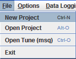

To present raw binary data found in the controller in an easy to read and edit fashion,
TunerStudio must relate the information in several key files. To accomplish this TunerStudio uses a project.
This project will tie together the firmware ini file(s), your settings, any inc files specific to your setup along
with your dashboards and preferences and settings for TunerStudio.
Note: TunerStudio does have the capability to open an
msq without a project,
this handy feature allows you to quickly view settings from any msq you
may have down loaded or gotten from a friend.
However, TunerStudio does this by creating a temporary project and will
not enable communications. You should always create a project
if you are going to connect to and configure a controller.
